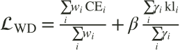
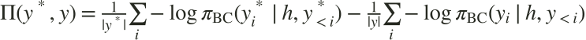
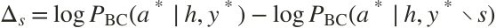
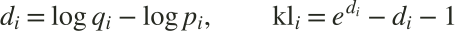

A working document, with a working preview
Find the right expression.
Change the actual page. Save a direction. Put two versions next to each other.
Does the visual language explain the research before someone reads the abstract? Editing marks make the teacher’s role tangible; generous margins let the example do the work.
Hold one thing constant, change another
Two directions.
A clearer choice.
Compare saved snapshots or the current working design. Each preview is a complete page.
What actually changes?
| Design decision | Direction A | Direction B |
|---|
Decide the argument before adding content
Structure is
part of the story.
Three useful routes through the same research, depending on who arrives and what they need.
Lead with the idea.
Make the teacher-as-editor concept immediately understandable. Build the case before showing the numbers.
Tradeoff: technical readers scroll further to reach the equations.
Lead with evidence.
Give researchers a reason to care early: the benchmark, the baseline, and the actual size of the gain.
Tradeoff: results need precise context before the method has been explained.
Lead with mechanics.
Introduce the algorithm and objective first. Let the explanatory animation carry the technical argument.
Tradeoff: a higher entry cost for readers who are new to agent distillation.
What belongs where
A page with depth,
not a pasted paper.
The first layer should give the insight. The second should let a researcher inspect the mechanism and evidence.
| Section | Show immediately | Let readers open |
|---|---|---|
| Hero | One takeaway, authors, paper link, concrete visual. | Full paper title and affiliation remain visible. |
| The idea | Student → teacher → style-preserving correction. | Original figure and full structured response. |
| Method | Four stages and the two terms of the objective. | Chaptered animation, exact equations, span weighting and masks. |
| Evidence | One benchmark, explicit baseline, model selector. | Full table, standard errors, transfer results and limits. |
| Paper | Preprint, authors, copyable citation. | Code and checkpoints when their release links exist. |
Explain the optimization, not just the pipeline
Make the loss
make sense.
A deeper Manim treatment, followed by an interactive explanation of what each term controls.
Two terms. Two different jobs.

What deserves attention?
Weight reasoning by how much it helps the student predict the corrected action. Divide by the weight sum so changing all weights together does not silently rescale the loss.
How far should reasoning move?
Penalize drift from the frozen seed on think, plan, and memory tokens. Leave action and step tokens almost unanchored so corrected decisions can be learned.
Which span earns
the learning signal?
Move the contribution scores. The weight map follows the paper’s Eq. 10, including average ranks for ties and the dead zone.
Illustrative values · one token per span · not experimental results
The demo holds target-token cross entropy and log-ratios fixed. β changes the objective’s penalty, not a simulated model’s accuracy.
| Role | CE weight w | Anchor γ | Fixed CE | Fixed d |
|---|
Extra surprisal, not raw perplexity.

The premium is the difference in mean per-token surprisal: log perplexity of supervision minus log perplexity of the student’s own response. Unfamiliar teacher wording can dominate a uniform loss.
What changes when this span disappears?

Both scores come from the frozen student checkpoint, computed offline. A negative contribution stays in the ranking; it is not automatically removed.
Rank within each step.
Here rₛ is the normalized within-step rank and σ = max Δ − min Δ is the contribution spread. With φ = 0.1 and τ = 0.05 nats, all-tied contributions give every span weight 0.55; near ties smoothly approach it. Ranks reduce sensitivity to action-probability scale.
A pointwise KL surrogate.

Here pᵢ is the current student’s target-token probability and qᵢ is the frozen seed’s, at the same context. This penalty is evaluated on corpus target tokens, not the exact full-vocabulary KL. The rationale mask is 1 for think/plan/memory and 10⁻⁶ elsewhere in the implementation.
Keep the decisions, not just the screenshots
Your design
working document.
Save combinations, record why they work, and export a brief when you find a direction.
What feels right?
Notes and saved directions stay in this browser. Export the workspace to keep a portable copy.
Continue from a saved document
Import a previously exported explorer workspace.
Saved directions
Snapshots stay fixed while you keep experimenting.